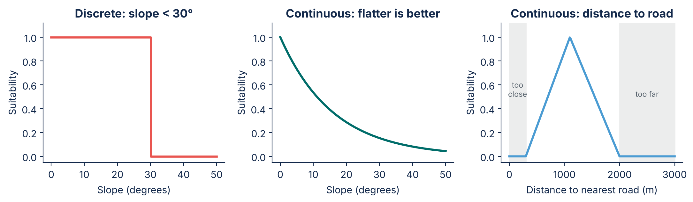
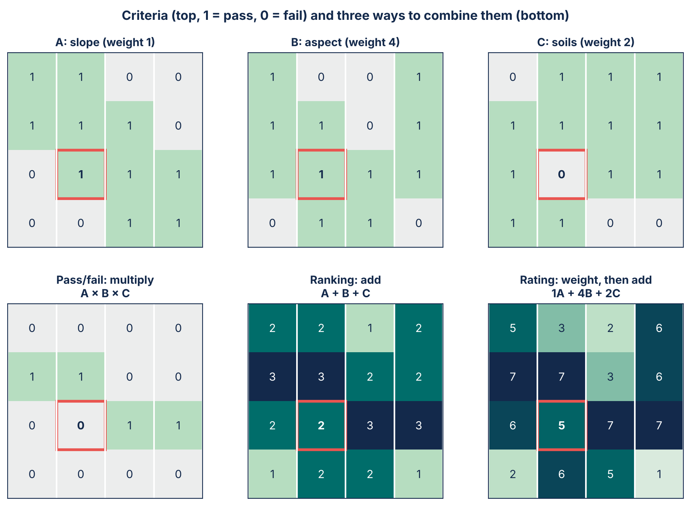

17 Suitability Modeling
By the end of this chapter you should be able to:
- Explain what a suitability model is, and describe it as a cartographic model and a flowchart.
- Turn plain-language criteria into measurable thresholds, and check that data exist for each one.
- Rank the values within a criterion from 0 to 1, with discrete and continuous rankings.
- Weight suitability layers, and calculate a suitability index.
- Tell the pass/fail, ranking, and rating (weighted linear combination) methods of combining layers apart, and choose between them.
- Justify weights, test a model’s sensitivity, and name the tools for each step in ArcGIS Pro and QGIS.
Where should the new school go? Which farms are best for a solar array? Where is the habitat for a rare salamander? Where should you build a house? Each of these questions asks GIS to look at every location in a study area, judge it against several criteria at once, and say which places are best. That is suitability modeling: ranking every location by how well it meets a set of criteria. It brings together almost everything in Unit 3, from reclassification and buffers (Chapter 13) to map algebra and distance on rasters (Chapter 14).
17.1 Models and flowcharts
17.1.1 Cartographic models
Chapter 13 introduced the cartographic model: a chain of spatial operations, in which each output becomes the next input (Tomlin 1990). Every cartographic model has three parts:
- Spatial data: the input layers, such as elevation, soils, and roads.
- Operations: what is done to them, such as slope, buffer, reclassify, and overlay.
- Output: the result, such as a map that ranks every location.
A suitability model is a cartographic model whose output is a ranking of locations.
17.1.2 Flowcharts
A flowchart is a diagram of a model’s input data, its operations, and their order. In the usual convention, rectangles are data layers, ovals are operations, and arrows show the order of operations (Figure 17.1). Sketch the flowchart before you open the software. Drawing it forces you to name every input and every step, and it documents the model so that someone else can check it and run it again.
![A flowchart. Elevation feeds two operations, Slope and Aspect, which produce slope and aspect layers. Soils feeds Select septic-suitable soils. Roads feeds Euclidean distance, which produces distance to road in meters. Each layer is then reclassified: slope under 30 degrees to 1, aspect 90 to 270 degrees to 1, suitable soils to 1, and 300 to 2,000 meters from a road to 1, producing four green suitability layers. They are multiplied by weights of 1, 4, 2, and 3 and go into a weighted sum, which produces a suitability index from 0 to 10.](../images/suitability-modeling/home-site-flowchart.png)
ArcGIS Pro’s ModelBuilder and QGIS’s Model Designer let you draw this flowchart on screen and run it. The diagram and the analysis are then the same thing, so the documentation can never fall out of date.
17.1.3 A first example: siting a park
Here is a model with only two inputs. A city wants the best place for a new park. Parks should serve many people, so population density counts for 60% of the score. New parks should fill gaps, so distance to existing parks counts for 40%. Each input is converted to a common scale, multiplied by its percentage, and added, cell by cell. The cells with the highest totals are the best candidate sites. This is a weighted overlay, and the rest of this chapter takes it apart step by step.
17.2 The five steps
Every suitability model, whether for a house, a habitat, or a hospital, follows the same five steps:
- Define criteria.
- Find data to measure each criterion.
- Rank each criterion: create a suitability layer ranked from 0 to 1.
- Weight each layer by the importance of its criterion (1, 2, 3, 4, …).
- Combine the layers, to find the locations with the highest (or lowest) suitability.
The rest of this chapter works through them with one running example: choosing a site for a house in the country.
17.3 Steps 1 and 2: criteria and data
17.3.1 Criteria in plain language
Criteria are the conditions a site must meet. Start by writing them in plain language. For our house:
- Slopes should not be steep. Steep ground is harder and costlier to build on.
- The land should face south. In the Northern Hemisphere, south-facing slopes get more sun for light, heat, and solar panels.
- Soils must suit a septic system, because there is no sewer connection.
- Far enough from a road for privacy, but not so far as to be isolated.
17.3.2 Before you build
Four questions come before any analysis:
- Can I get the data? Elevation, soils, and roads, at a usable resolution and date. In the United States, elevation comes from the USGS 3D Elevation Program, soils from the NRCS’s SSURGO database, and roads from TIGER/Line files or a state’s road layer.
- What exactly does each criterion mean? “Too steep” means nothing to software until it is a number of degrees.
- How much does each criterion matter? That will set the weights.
- How accurate are the data? Errors in any input carry straight through to the result (Chapter 19).
If a criterion can’t be measured with the data you have, change it or drop it.
17.3.3 Refining criteria into thresholds
Next, turn each criterion into a threshold the software can test (Table 17.1).
| General criterion | Refined criterion |
|---|---|
| Slopes not too steep | Slope < 30° |
| Southern aspect preferred | 90° < aspect < 270° |
| Soils suitable for a septic system | Soil types on the septic-suitable list |
| Far enough from a road for privacy, but not isolated | 300 m < distance to road < 2,000 m |
Slope is the steepness of the ground, and aspect is the compass direction a slope faces, measured in degrees clockwise from north. Both are calculated from an elevation raster. An aspect between 90° and 270° covers slopes facing east, south, and west, centered on south. A soil survey rates each soil type for septic systems, so the soils criterion becomes a list of acceptable types.
These numbers are choices. A builder might accept 35° slopes; a family who wants a garden might want under 10°. Change a threshold and the answer changes, so write down why you chose each one.
Write refined criteria for a new community garden on your campus or in your town. Which criteria need a distance? Which need a list of categories? Which do you have no data for?
17.4 Step 3: rank each criterion
17.4.1 Suitability layers
Slope is measured in degrees, distance in meters, and soils by name. To combine them, each must first be put on a common scale. A suitability layer scores every cell for one criterion, from 0 (completely unsuitable) to 1 (ideal). Because all suitability layers share the same scale, they can be added and compared.
The scores given to values within one criterion are rankings. There are two kinds (Figure 17.2):
- A discrete ranking is a yes-or-no rule: each value passes (1) or fails (0). “Slope < 30°” is discrete: 29° scores 1, and 31° scores 0.
- A continuous ranking scales values smoothly from worst to best. Flat ground might score 1, 10° score 0.5, and 40° score close to 0. A continuous ranking keeps more information: a 31° slope is not as bad as a 60° one.
Some textbooks and tools rank on a scale of 0 to 10, or 1 to 9. Dividing by 10 gives the same idea on our 0 to 1 scale.

17.4.2 Ranking examples: roads and slope
Some criteria can’t be ranked directly from the input layer. A roads layer has lines, not distances. So we first derive a layer that measures the criterion, then rank it (Figure 17.3):
- Roads. Calculate the Euclidean distance from every cell to the nearest road (Chapter 14), then rank the distances with the tent-shaped function in Figure 17.2. Too close is noisy, too far is isolated, so the score is 0 below 300 m and above 2,000 m, and highest near 1,100 m.
- Slope. Calculate slope from the elevation raster, then rank it with a curve that falls as slope rises: flat ground scores near 1, and steep ground near 0.
17.4.3 Reclassification
Reclassification (Chapter 14) is the workhorse of suitability modeling. It replaces each raw value with a score, using a rule or a lookup table. For our discrete criteria:
- Slope: under 30° → 1; otherwise → 0.
- Aspect: 90° to 270° → 1; otherwise → 0.
- Soils: types on the septic-suitable list → 1; all others → 0.
- Distance to road: 300 to 2,000 m → 1; otherwise → 0.
Record each rule in a table, or in the model itself, so the model can be rerun with new data or new thresholds. For continuous rankings, ArcGIS Pro’s Rescale by Function tool applies a curve (linear, Gaussian, logistic, and others) instead of a table.
17.5 Step 4: weight each layer
Not every criterion matters equally. Weightings (or weights) are multipliers that set how much each criterion counts. Suppose the buyer cares most about a sunny, south-facing site, then about access, then about soils, and least about slope. We might weight aspect 4, roads 3, soils 2, and slope 1.
Each cell’s suitability index is the sum of its weighted scores. With discrete (0 or 1) layers, a cell that passes a criterion earns that criterion’s weight, and a cell that fails earns 0 (Table 17.2).
| Roads (weight 3) | Slope (weight 1) | Aspect (weight 4) | Soils (weight 2) | Suitability index |
|---|---|---|---|---|
| 0 | 0 | 0 | 0 | 0 |
| 0 | 0 | 0 | 2 | 2 |
| 0 | 0 | 4 | 2 | 6 |
| 0 | 1 | 4 | 2 | 7 |
| 3 | 1 | 4 | 2 | 10 |
The maximum is 3 + 1 + 4 + 2 = 10, for a cell that meets every criterion. Because aspect carries the most weight, a south-facing cell scores 6 even with no good road access, while a cell that meets every criterion except aspect can score no more than 6.
Weights are a judgment call. That doesn’t make them arbitrary, but it does mean you must explain them (Section 17.7).
17.6 Step 5: combine the layers
17.6.1 Three ways to combine
Once every criterion is a ranked layer, there are three common ways to combine them (Table 17.3, Figure 17.4).
| Method | How layers combine | What the output shows |
|---|---|---|
| Pass/fail (binary) | Multiply all the ranked, reclassified layers | 1 only where every criterion passes |
| Ranking (linear combination) | Add all the ranked, reclassified layers | How many criteria each cell meets |
| Rating (weighted linear combination) | Weight each layer, then add | A score that reflects each criterion’s importance |

17.6.2 Pass/fail
The pass/fail (binary) model reclassifies every criterion to 1 for good and 0 for bad, and multiplies the layers. Any 0 makes the product 0, so only cells that meet every criterion survive: 1 × 1 × 0 = 0. The outlined cell in Figure 17.4 passes slope and aspect, but fails soils, so it is ruled out.
Pass/fail is simple and strict. It matches criteria that are truly non-negotiable, such as “not in a floodway” or “not on protected land.” But it can’t tell a near miss from a terrible site, and with many criteria it often leaves nothing at all. It is the raster version of McHarg’s overlays, and of the vector approach in Chapter 13: select, buffer, and intersect until only the qualifying areas are left.
17.6.3 Ranking
The ranking model adds the same 0 and 1 layers instead of multiplying them. The result counts how many criteria each cell meets. The outlined cell now scores 1 + 1 + 0 = 2, “better” instead of ruled out, and the map separates the best, better, marginal, and bad cells. This is a linear combination. Its weakness is that every criterion counts equally.
17.6.4 Rating: weighted linear combination
The rating model, or weighted linear combination (WLC), multiplies each layer by its weight before adding:
\[ S = \sum_{i} w_i \, x_i \]
where \(x_i\) is a cell’s score on criterion \(i\), and \(w_i\) is that criterion’s weight (Eastman et al. 1995; Malczewski 2004). With weights 1, 4, and 2, the outlined cell scores 1(1) + 4(1) + 2(0) = 5 of a possible 7. WLC keeps the most information, and it is the method behind ArcGIS Pro’s Weighted Overlay and Weighted Sum tools.
WLC works with continuous rankings too. If three criteria are rated on a scale of 1 (bad) to 9 (best), and a cell rates 9, 7, and 1 with equal weights, its rating is (9 + 7 + 1) ÷ 3 = 5.67, “OK to better.” With equal weights, WLC is simply the average. Change the weights, and the same cell can rise or fall in the ranking.
Weights are often written as fractions that sum to 1, such as 0.4, 0.3, 0.2, and 0.1 instead of 4, 3, 2, and 1. Dividing every weight by their total does this without changing the ranking, and keeps the index on the same scale as the inputs.
17.7 Choosing weights and checking results
A model’s output looks precise, with a score for every cell. That can hide how many choices went into it. Before trusting a result:
- Set weights openly. Use expert judgment, input from the people affected (stakeholders), or a structured method of pairwise comparison such as the Analytic Hierarchy Process (AHP), which asks which of two criteria matters more, and by how much (Saaty 1980). Chapter 18 works through AHP step by step.
- Test sensitivity. A sensitivity analysis changes one weight or threshold at a time, and watches whether the best sites move. If a small change moves them, the answer is fragile.
- Check against reality. Compare the results with sites you already know are good or bad.
- Respect the data’s limits. Cell size, data age, and errors set how precise the answer can be. A 30 m cell can’t answer a question about one house’s footprint.
Figure 17.5 runs the whole home-site model on our made-up landscape, then swaps the weights of aspect and slope. Cells that meet all four criteria score 10 either way. But the cells that score 8 or more grow from 36% of the area to 48% when slope counts most, and the second-best sites move. Which answer is “right” depends on what the buyer values, which is exactly why the weights must be written down.
![Top row: four small maps in pale green and gray. Slope under 30 degrees passes almost everywhere except rings around two hills. Aspect 90 to 270 degrees passes in irregular bands. Septic-suitable soil passes in large blobs. 300 to 2,000 meters from a road fails along the roads and passes in between. Bottom row: two larger maps of the suitability index from 0, pale, to 10, dark navy. Both have the same red-outlined patches that score 10, covering 23 percent of cells. With weights 1, 4, 2, 3, 36 percent of cells score 8 or more. With weights 4, 1, 2, 3, 48 percent score 8 or more, and several mid-scoring patches turn darker.](../images/suitability-modeling/home-site-result.png)
A county uses a WLC model to site a new landfill, and the top-ranked site is next to a low-income neighborhood. Which parts of the model would you question first: the criteria, the data, the rankings, or the weights? Who should have had a say in the weights?
17.8 The complete model
Figure 17.1 is the whole home-site model in one picture. Read each column from top to bottom: elevation gives slope and aspect, soils are selected for septic suitability, and roads become distance bands. Each branch ends in a suitability layer, and the weighted sum at the bottom combines them into one index. Every step in this chapter appears somewhere on the chart.
The same five steps, with different criteria and data, site wind farms, schools, retail stores, conservation reserves, and wildlife corridors. More advanced multi-criteria decision analysis (MCDA) methods add fuzzy (gradual) memberships, trade-offs between criteria, and ways to measure the uncertainty of the result (Malczewski 2006), but they all start here.
17.9 Suitability modeling in ArcGIS Pro and QGIS
| Step | ArcGIS Pro | QGIS |
|---|---|---|
| Derive input layers | Slope, Aspect, Euclidean Distance (Distance Accumulation) | Slope, Aspect, Proximity (raster distance) |
| Rank each criterion | Reclassify, Rescale by Function | Reclassify by table, Raster Calculator |
| Weight and combine | Weighted Overlay, Weighted Sum, Raster Calculator | Raster Calculator |
| Document the model | ModelBuilder, Suitability Modeler | Model Designer |
In ArcGIS Pro these are Spatial Analyst tools. The Suitability Modeler walks you through the steps in one pane: add criteria, transform them to a common scale, weight them, and see the suitability map update as you go. In QGIS most of the tools are in the Processing Toolbox; build the whole chain in the Model Designer so the flowchart and the analysis are the same thing.
17.10 Check your understanding
Ranking every location by how well it meets a set of criteria is:
In a flowchart, operations such as buffer and reclassify are usually drawn as:
On a 0 to 1 suitability layer, a cell that is completely unsuitable scores:
Aspect between 90° and 270° describes slopes that face, broadly:
A ranking that scores each value 1 (pass) or 0 (fail) is:
With weights roads 3, slope 1, aspect 4, and soils 2, a cell that passes slope, aspect, and soils but fails roads has a suitability index of:
Multiplying 0/1 suitability layers gives:
Changing one weight at a time to see whether the best sites move is a sensitivity analysis.
17.11 Summary
- Suitability modeling ranks every location by how well it meets a set of criteria. It is a cartographic model, best planned and documented as a flowchart of data (rectangles), operations (ovals), and their order (arrows).
- The five steps are: define criteria, find data, rank each criterion from 0 to 1, weight the layers, and combine them.
- Plain-language criteria must become measurable thresholds, such as slope < 30°. Thresholds are choices, and should be recorded.
- Rankings turn the values within one criterion into scores on a common scale, either discretely (pass or fail) or continuously. Derived layers, such as slope, aspect, and distance, often come first, and reclassification does the ranking.
- Weightings set how much each criterion counts. The suitability index is the sum of the weighted scores.
- Layers can be combined by multiplying (pass/fail), adding (ranking), or weighting and adding (rating, or weighted linear combination).
- Set weights openly (expert judgment, stakeholders, or AHP), run a sensitivity analysis, check results against known sites, and respect the data’s limits.
17.12 Exercises
- Refine the criteria. Write refined criteria, with thresholds, for siting a new elementary school in Orange County, North Carolina. For each one, name a data source.
- Suitability index by hand. With weights roads 3, slope 1, aspect 4, and soils 2, compute the suitability index for a cell that passes roads and soils only, and for one that passes slope and aspect only. Which is the better site, and why?
- Pass/fail vs. rating. For the 16 cells in Figure 17.4, how many pass under the pass/fail model? How many score 5 or more under the rating model? Which would you show a client, and why?
- Build it. Download a 1/3 arc-second (about 10 m) DEM from the USGS National Map and soils from the Web Soil Survey for a rural area of North Carolina. Build the home-site model in ArcGIS Pro’s ModelBuilder or the QGIS Model Designer, and map the suitability index.
- Sensitivity. In your model from Exercise 4, swap the weights of aspect and slope. What fraction of the area scores 8 or more before and after? Did the best sites move?
- Plan your own. Working with a partner, pick a real siting problem: a wind farm, a community garden, a dog park, or habitat for a species you care about. Draw its flowchart, list the data for each criterion, say how you would rank and weight them, and name what could go wrong.
17.13 Further reading and online resources
17.13.1 Books and papers
- GIS Fundamentals, by Paul Bolstad (Bolstad 2022). The chapter on spatial analysis covers cartographic models and suitability analysis, including the home-site example.
- Geographic Information Systems and Cartographic Modeling, by C. Dana Tomlin (Tomlin 1990), which introduced map algebra and the cartographic model.
- Design with Nature, by Ian McHarg (McHarg 1969), the classic of overlay-based planning.
- Jacek Malczewski, “GIS-based land-use suitability analysis: A critical overview” (Malczewski 2004), and “GIS-based multicriteria decision analysis: A survey of the literature” (Malczewski 2006).
- Collins, Steiner, and Rushman, “Land-use suitability analysis in the United States” (Collins et al. 2001), a short history of the method.
- Eastman and colleagues, “Raster procedures for multi-criteria/multi-objective decisions” (Eastman et al. 1995), the paper behind the decision-support tools in IDRISI (now TerrSet).
- Intro to GIS and Spatial Analysis, by Manuel Gimond, free online: https://mgimond.github.io/Spatial/.
17.13.2 ArcGIS Pro
- Esri, “Introduction to the Suitability Modeler”: https://doc.esri.com/en/arcgis-pro/latest/help/analysis/spatial-analyst/suitability-modeler/what-is-the-suitability-modeler.html.
- Esri, “Implement the suitability modeling workflow”: https://pro.arcgis.com/en/pro-app/3.3/help/analysis/spatial-analyst/suitability-modeler/implement-the-suitability-modeling-workflow-using-the-suitability-modeler.htm.
- Esri, “How Weighted Overlay works”: https://pro.arcgis.com/en/pro-app/latest/tool-reference/spatial-analyst/how-weighted-overlay-works.htm.
- Esri, “Weighted Sum”: https://pro.arcgis.com/en/pro-app/latest/tool-reference/spatial-analyst/weighted-sum.htm.
- Esri, “How Rescale by Function works”: https://pro.arcgis.com/en/pro-app/latest/tool-reference/spatial-analyst/how-rescale-by-function-works.htm.
- Esri, “Reclassify”: https://pro.arcgis.com/en/pro-app/latest/tool-reference/spatial-analyst/reclassify.htm.
- Esri, “Slope”: https://pro.arcgis.com/en/pro-app/latest/tool-reference/spatial-analyst/slope.htm, and “Aspect”: https://pro.arcgis.com/en/pro-app/latest/tool-reference/spatial-analyst/aspect.htm.
- Esri, “What is ModelBuilder?”: https://pro.arcgis.com/en/pro-app/latest/help/analysis/geoprocessing/modelbuilder/what-is-modelbuilder-.htm.
- Esri, “Suitability modeling workflow using ArcGIS Pro”, a three-lesson case study: https://desktop.arcgis.com/en/analytics/case-studies/suit-lesson1-pro-exploring-and-deriving-data.htm.
- Esri, “Site suitability analysis” (imagery workflows): https://doc.arcgis.com/en/imagery/workflows/resources/site-suitability-analysis.htm.
- ArcUser, “Modeling Suitability”: https://www.esri.com/about/newsroom/arcuser/modeling-suitability.
- Learn ArcGIS, “Site a sustainable shrimp farm”: https://learn.arcgis.com/en/projects/site-a-sustainable-shrimp-farm/.
- Learn ArcGIS, “Identify groundwater vulnerable areas”: https://learn.arcgis.com/en/projects/identify-groundwater-vulnerable-areas/.
- Utah State University, “Suitability Modeler in ArcGIS Pro” tutorial: https://www.usu.edu/geospatial/tutorials/advanced/suitability-modeler.
17.13.3 QGIS
- QGIS Tutorials and Tips, “Multi Criteria Overlay Analysis (QGIS3)”: https://www.qgistutorials.com/en/docs/3/multi_criteria_overlay.html.
- Spatial Thoughts, “Weighted Multi-Criteria Overlay Analysis using GDAL Tools”: https://spatialthoughts.com/2022/01/31/multi-criteria-overlay-gdal/.
- QGIS User Guide, “Raster Analysis” (Raster Calculator): https://docs.qgis.org/latest/en/docs/user_manual/working_with_raster/raster_analysis.html.
- QGIS User Guide, Processing algorithms for raster analysis: https://docs.qgis.org/latest/en/docs/user_manual/processing_algs/qgis/rasteranalysis.html, raster terrain analysis: https://docs.qgis.org/latest/en/docs/user_manual/processing_algs/qgis/rasterterrainanalysis.html, and GDAL raster analysis (Proximity): https://docs.qgis.org/latest/en/docs/user_manual/processing_algs/gdal/rasteranalysis.html.
- QGIS User Guide, “The model designer”: https://docs.qgis.org/latest/en/docs/user_manual/processing/modeler.html.
- QGIS Training Manual, “Lesson: Terrain Analysis”: https://docs.qgis.org/latest/en/docs/training_manual/rasters/terrain_analysis.html, and “Module: Completing the Analysis”, a full site-selection problem: https://docs.qgis.org/latest/en/docs/training_manual/complete_analysis/index.html.
17.13.4 Data
- USGS 3D Elevation Program (3DEP): https://www.usgs.gov/3d-elevation-program.
- NRCS Web Soil Survey: https://websoilsurvey.nrcs.usda.gov/, and the SSURGO database: https://www.nrcs.usda.gov/resources/data-and-reports/soil-survey-geographic-database-ssurgo.
- U.S. Census Bureau TIGER/Line Shapefiles (roads): https://www.census.gov/geographies/mapping-files/time-series/geo/tiger-line-file.html.
- Multi-Resolution Land Characteristics Consortium (National Land Cover Database): https://www.mrlc.gov/.
- NC OneMap, North Carolina’s statewide GIS data: https://www.nconemap.gov/.
17.13.5 Other tools and courses
- TerrSet (formerly IDRISI), Clark University, with multi-criteria evaluation tools: https://www.clarku.edu/geospatial-analytics/terrset/.
- AHP Online System (AHP-OS), a free pairwise comparison calculator: https://bpmsg.com/ahp/.
- Penn State, GEOG 586: Geographic Information Analysis: https://courses.ems.psu.edu/geog586/node/699.
- The GIS&T Body of Knowledge: https://www.ucgis.org/site/gis-t-body-of-knowledge.